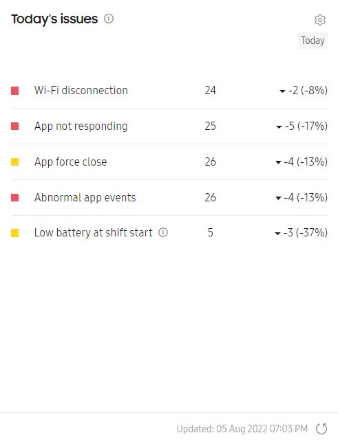
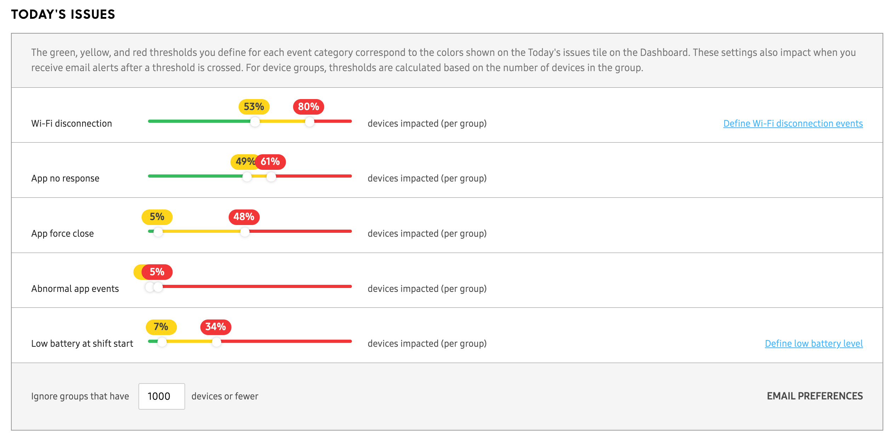

Today’s issues
Last updated July 7th, 2026
The Today’s issues tile on the Knox Asset Intelligence dashboard shows a summary of events detected across your device fleet for the current day, helping you quickly identify and respond to emerging issues.

This tile is always available on the main dashboard, and can’t be removed from the dashboard Settings > Customize menu. Additionally, this insight does not have an expanded details or drill-down view.
The following events are reported in this insight:
- Wi-Fi disconnection: Tracks unexpected Wi-Fi disconnections experienced by your devices.
- Apps not responding: Counts devices with apps that are unresponsive to user input.
- Apps force close: Counts devices with apps that crashed and close unexpectedly.
- Abnormal app events: Counts devices that detected unusual app behavior leading to potential excessive battery drain.
- Low battery at shift start: Counts devices with low battery levels at the beginning of a work shift.
In addition to each event’s total device count, this insight also indicates whether the total number of devices with issues is higher or lower than the previous day. Click any device count to see which devices reported the issue, enabling you to quickly investigate and take action. Click (Refresh icon) next to the timestamp to request the latest data from the server at any time.
Severity of issues and thresholds
The Today’s issues insight uses a three-color (green, yellow, red) system to indicate the severity of reported issues. These colors directly relate to the number of devices that reported the issue, with the colors typically meaning the following:
- Green indicates that the number of devices reporting the issue is low, and therefore the issue is not considered severe.
- Yellow indicates that the number of devices reporting the issue may be a cause for concern and must be investigated, but is not yet critical.
- Red indicates that the number of devices reporting the issue is severe and must be investigated as soon as possible.
Click (Settings icon) to change the threshold values for this insight.

On this page
Is this page helpful?